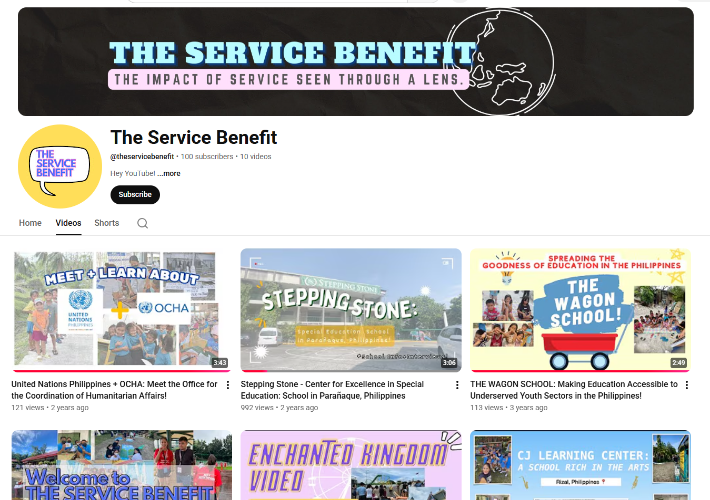
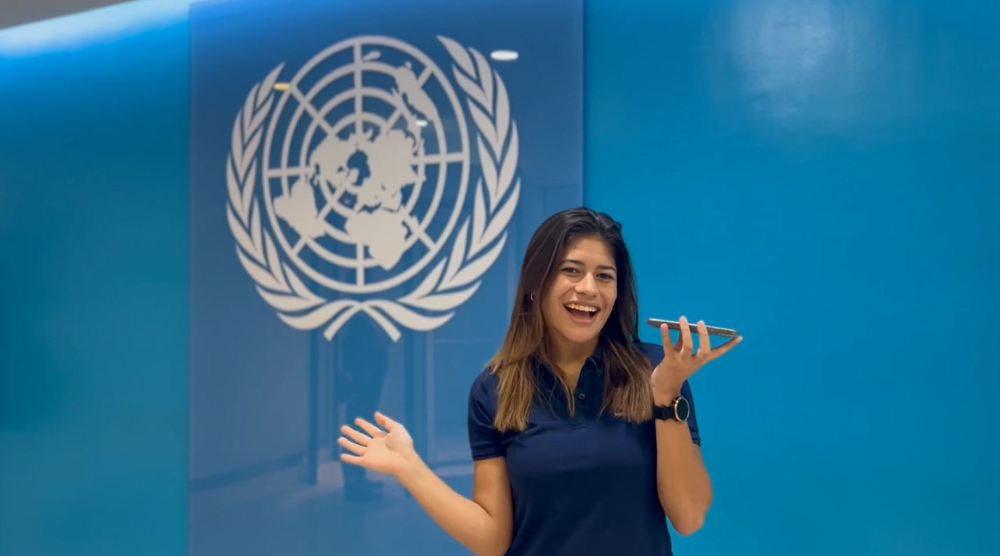
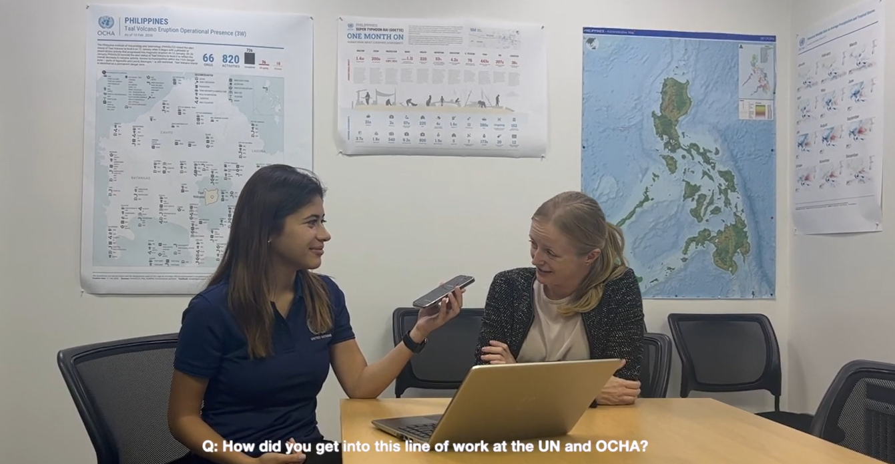

Creative Content / Community Storytelling
Built a content platform spotlighting NGOs, service opportunities, and stories of community impact.

This video is placed first because it immediately shows the heart of the project: storytelling, service, and visual communication.


This project shows my ability to turn research, outreach, and mission-driven information into visual content. For Sparq, that same skill translates into making complex AI and operational strategy feel clear, human, and engaging.